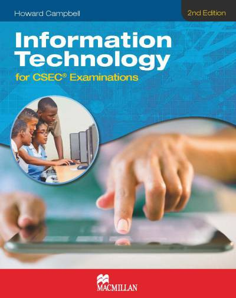
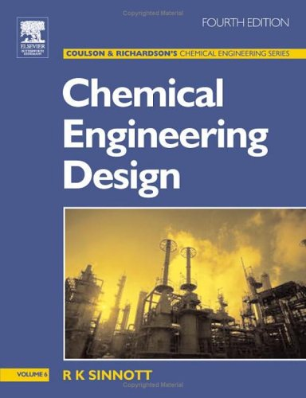
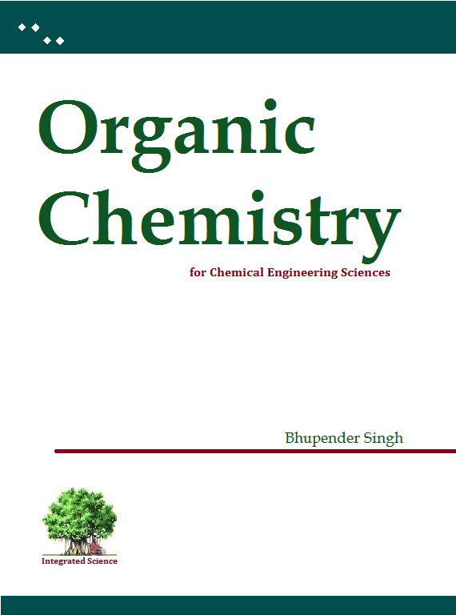
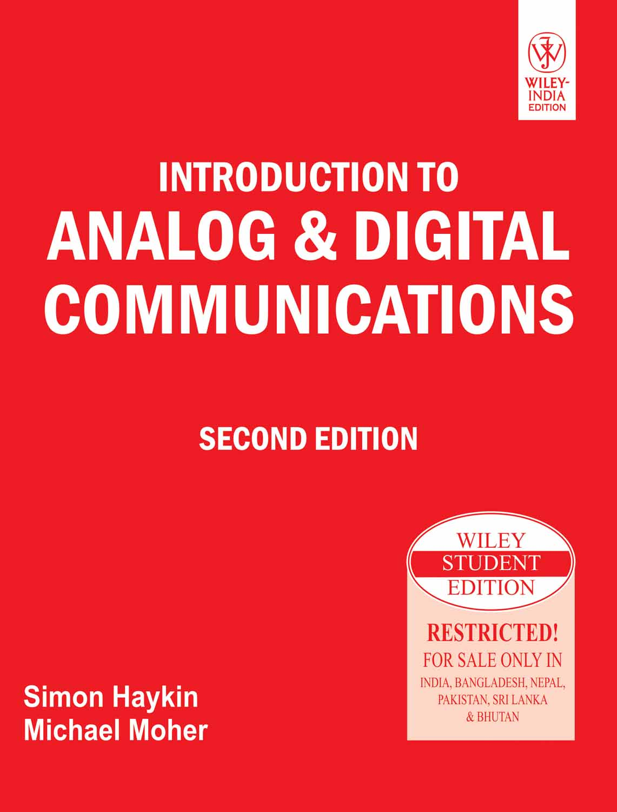
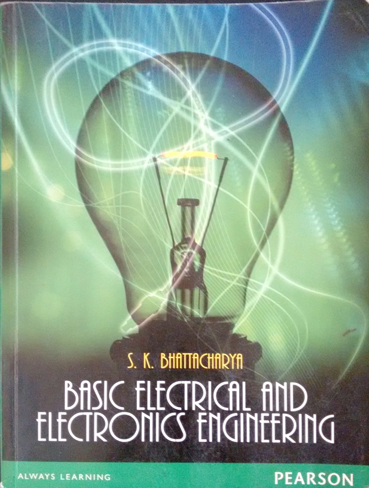
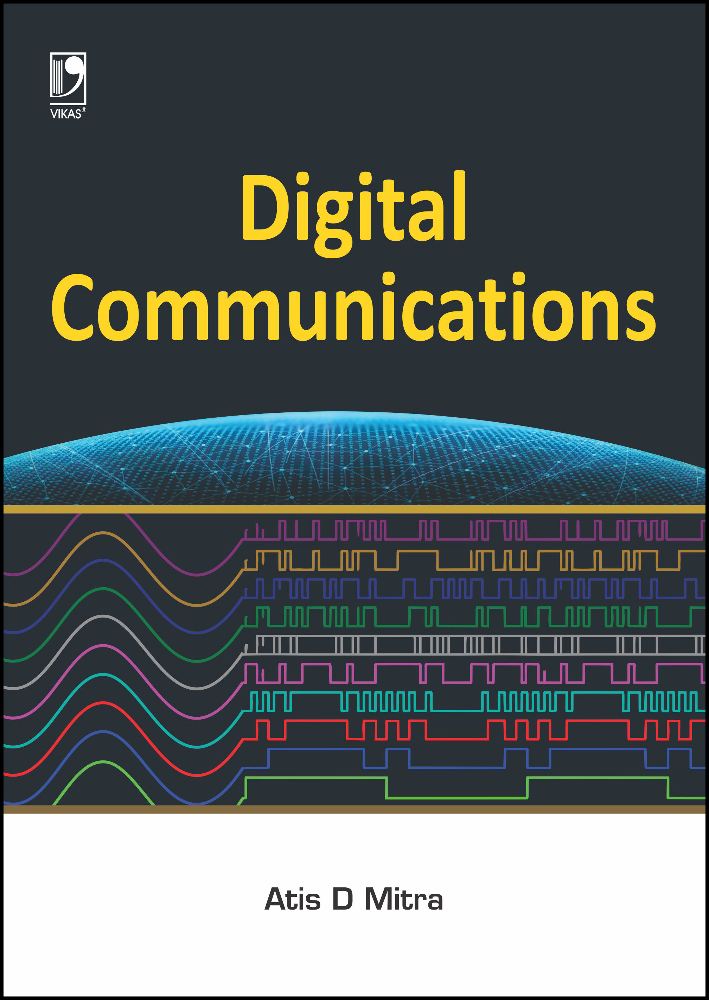
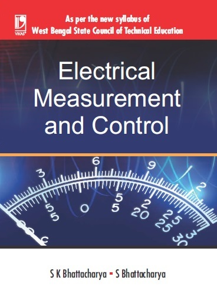

| S.no | Picture | Name | Author | Price |
|---|
| 1 |  | C Programming | Ashoke N Kamthane | 350 |
| 2 |  | Data stuctures | Blaguru swami | 600 |
| 3 |  | C++ | Shlberzt albert | 400 |
| 4 |  | computer networks | jhmes kerosh | 500 |
| 5 |  | Information Technology | Howard | 500 |
| 6 | | Data stuctures | Blaguru swami | 600 |
| 7 | | C++ | Shlberzt albert | 400 |
| 8 | | computer networks | jhmes kerosh | 500 |
| 9 |  | Chamical Engineering Desingn | R K Sinnot | 500 |
| 10 |  | Chamical Engineering | M Srinivas rao | 400 |
| 11 |  | Physical Chemistry | S.Chandh | 600 |
| 12 |  | Organic Chemistry | Arun Babu | 350 |
| 13 |  | Anolog and Digital Communication | Symain haykan | 500 |
| 14 |  | Basic Electical and Electronics | S K Bhatta Chrya | 400 |
| 15 |  | DIGITAL COMMUNICATIONS | S K Bhatta Chrya | 600 |
| 16 |  | ELECTRICAL MEASUREMENT AND CONTROL | jhmes kerosh | 350 |
| 17 |  | Electronic Principles | Malvino | 500 |
| 18 | | circuit-theory-analysis-and-synthesis | Chakrabarthi | 400 |
| 19 | | Networks: An Introduction | M.E.J newman | 600 |
| 20 | | ELECTRICAL MEASUREMENT AND CONTROL | jhmes kerosh | 350 |